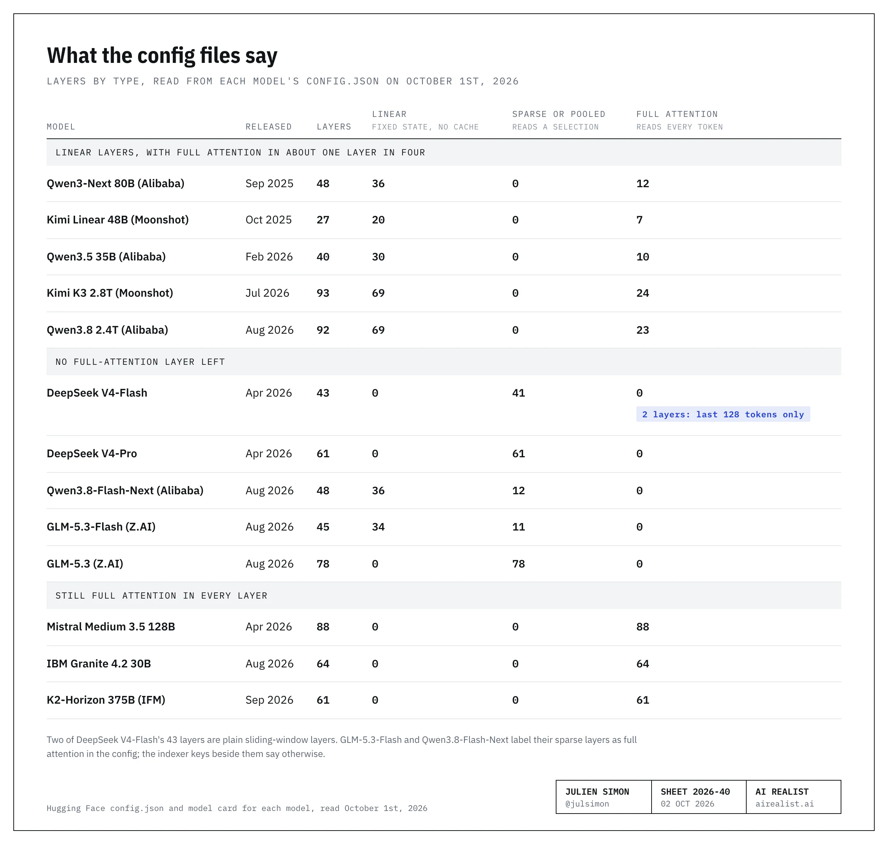
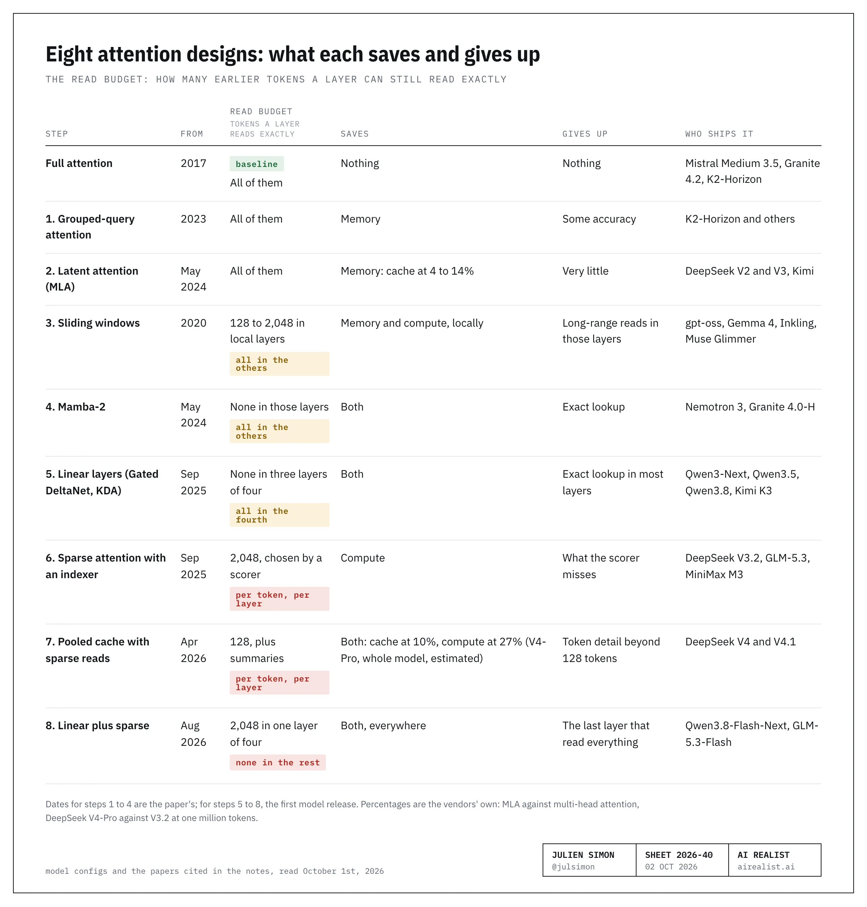
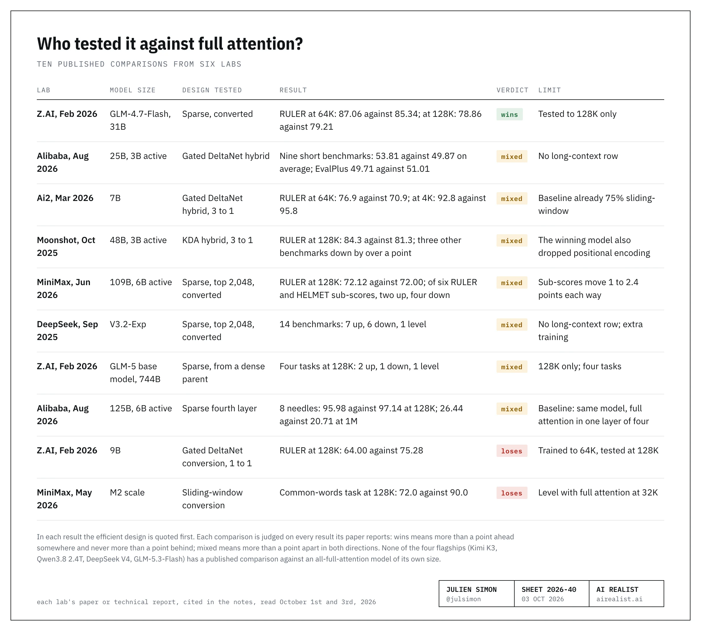

Open the config file for Qwen3.8-Flash-Next, released by Alibaba in August 2026, and count the layers. There are 48. Thirty-six are labelledlinear_attention. The other 12 are labeledfull_attentionand they are not: a few lines up, the file gives them an indexer, a small network that picks which tokens the layer reads, with a budget of 2,048 tokens [1]. No layer in this model does what the original Transformer’s layers did in 2017: read every earlier token in full.
It is not just one model. Alibaba, Moonshot, DeepSeek and Z.AI now ship models in which about one layer in four still reads every earlier token, or none does [2]. The labs’ case for these designs is cost: by DeepSeek’s own estimate, its V4-Pro needs a tenth of the cache its previous model did at a million tokens [3].
But while Kimi K3 and DeepSeek V4 offer a million tokens of context, and Qwen3.8 offers 262,144, extensible to a million [2][3], only one of the ten published full-attention comparisons I count below goes past 128,000 tokens. So, if you are picking an open model for long documents or for agents, this one is for you.
What the config files say
A model card is prose.config.jsonis what the inference engine actually loads, so that is where I looked, on October 1st, 2026 [2].
Kimi K3, Moonshot’s 2.8-trillion-parameter model, has 93 layers: 69 linear layers and 24 full-attention layers. Alibaba’s largest Qwen3.8 has 92: 69 and 23. DeepSeek V4 has no full-attention layer at all: it reads the last 128 tokens exactly, and anything older only through compressed summaries, some of which an indexer selects. Z.AI’s GLM-5.3-Flash has 34 linear layers and 11 sparse ones, with a selection budget of 2,048.

One warning before you go and check. GLM-5.3-Flash does what Qwen3.8-Flash-Next does: it lists its 11 sparse layers under a key calledfull_attn_layers[2]. The giveaway is elsewhere in the same file, wherelayer_typescalls those layersdeepseek_sparse_attention, with a budget of 2,048. Read the neighbors, not just the label.
Not everyone moved. Mistral Medium 3.5, IBM’s Granite 4.2, and K2-Horizon from the IFM institute still use full attention in every layer [4]. Google, Meta, OpenAI, and Thinking Machines mix it with layers that only see a recent window. NVIDIA and IBM have used a third option, Mamba-2. And Ai2 trained a 7-billion-parameter model on the same linear layers Alibaba uses [4]. A survey by Alibaba’s own researchers counts 17 hybrid releases, i.e., models that mix layer types, out of 27 in 2026, against 9 of 25 in the two years before, and concludes “continued coexistence rather than a universal replacement path” [5]. Fair enough. Still, of the eleven high-performing open-weight models that survey compares, only one uses full attention in every layer [5].
Why long context gets expensive
A full-attention layer keeps a key and value for every token it has seen (the KV cache) and reads all of them to write the next token; that cache is what you rent when a provider sells you “cached input”. Two bills grow with it: compute, because work per token grows with context and reading a whole prompt grows quadratically, and memory, because the cache grows with every token, for every user at once.
Agents made both bills urgent because they resend their whole history at every step: tool output, files, earlier turns. Moonshot’s and DeepSeek’s papers both open on the cost of long contexts and long-running agents [3][6]. DeepSeek’s tenth-of-the-cache model above uses 27% of the compute per token, both at a million tokens [3]. Moonshot’s Kimi Linear claimed “up to 75%” less cache [6].
What does that buy? More users per GPU and more context per user, i.e., a lower cost per token. On September 29th, 2025, the post that announced DeepSeek’s first sparse-attention model also cut its price per million tokens from $0.56 to $0.28 for uncached input and from $1.68 to $0.42 for output [7]. List prices don't tell me whether buyers see the savings. On October 1st, 2026, DeepSeek’s own V4-Pro listed at $1.32 per million uncached input tokens and $3.96 per million output tokens at peak hours, above its 2025 price, and Kimi K3, a far larger model, at $3.00 and $15.00 [7].
One thing I looked for and did not find: export controls, sanctions, HBM, memory prices, or shortages cited as reasons for the design in the DeepSeek V4 report, the Kimi K3 technical report, or the Kimi K3, GLM-5.3-Flash, and Qwen3.8 model cards [8]. Z.AI comes closest, saying GLM-5.3-Flash’s pre-release traffic was “served on Chinese AI chips”, which “are primarily constrained by memory capacity and bandwidth” [8]. Z.AI doesn't say whether that's also why the model looks the way it does, and I won’t say it for them.
Eight attention designs: what each saves and gives up
Each of the eight answers the same questions: what a layer stores and reads, what that saves, what it gives up, who ships it, and what to test. They run in order of what each still reads, not of date: every token (1 and 2), some layers still do (3 to 5), none does (6 to 8). The table gives the dates. For the mechanics of attention and the KV cache, I have three step-by-step videos [9].

1. Grouped-query attention.The heads of a layer, its parallel readers, share keys and values in groups instead of each keeping its own; every token is still read. It saves memory and costs some accuracy: on a 7-billion-parameter test, DeepSeek measured 41.2 on a general-knowledge benchmark with eight groups against 45.2 without [10]. Even K2-Horizon, whose config has no window, linear, or latent layers, “retains full GQA” [4][5]. What to test: nothing specific to this step.
2. Latent attention (MLA).The key and value for each token are compressed into a single vector of 576 numbers per layer, which the heads read directly, still for every token, every time [10]. In May 2024, DeepSeek ran the same model both ways, and the compressed version won 7 of 8 comparisons, with a cache between 4% and 14% of the original [10]. Kimi’s full-attention layers use it too. What to test: nothing specific to this step.
3. Sliding-window attention.Some layers keep only the most recent 128 to 2,048 tokens, and the rest keep everything: OpenAI’s gpt-oss alternates one and one, Gemma 4 and Thinking Machines’ Inkling run five windowed layers for each full one [4]. The windowed layers save memory and compute and cannot see far. MiniMax tried it on its M2 model: on a task that asks which words come up most often in the context, no difference at 32,000 tokens and a fall from 90.0 to 72.0 at 128,000 [14]. What to test: the same task at 32,000 tokens and at your real length.
4. State-space layers (Mamba-2).These layers store nothing per token. Each keeps a fixed-size state, a running summary of everything it has read so far, and rewrites it with every token, so nothing grows. That saves memory and compute, but it gives up the per-token key and value: there is nothing to go back to, and the more the state absorbs, the less of it comes back exactly. At 2.7 billion parameters, it tied a full-attention model (60.2 to 60.2) and did slightly better with six attention layers mixed in [11]. NVIDIA’s Nemotron 3 Ultra ships 48 of these layers, with 12 attention layers [4]. What to test: finding one exact name or number from early in a long context.
5. Linear attention (Gated DeltaNet, KDA).The state is again fixed in size, and each new token does three things to it: fade everything by a learned amount, weaken whatever was stored under a similar key, write the new entry [12]. That targeted weakening is the change from Mamba-2: the layer can revise a fact instead of blurring it. But a fixed state holds only so much. The paper that introduced the layer shows the cost: across six retrieval and question-answering tasks, the pure layer averaged 30.6 against a full-attention model’s 37.0, on inputs of only 2,000 tokens [12]. So no model in this piece ships the pure layer; the ones that use it ship a hybrid: three linear layers, then one full-attention layer for the exact lookups. Qwen3-Next shipped that in September 2025; Moonshot followed in October with its own variant, Kimi Delta Attention (KDA). Kimi K3 and Qwen3.8 use about the same layout at the trillion-parameter scale (69 linear layers to 24 and to 23): Kimi with KDA, which lets each channel forget at its own rate, and Qwen with Gated DeltaNet [2][6].
Why three to one? Moonshot tried five ratios on a small model, and 3:1 came out a hair ahead of 1:1 [6]. Mamba-2’s authors had found about 10% attention worked best [11]. Moonshot’s own “up to 6×” faster decoding is, in its words, “theoretical”; measured one request at a time, it is 2.3× [6]. What to test: retrieval of many items at once, at the context length you will really run.
6. Sparse attention with an indexer.Keep every token’s key and value, but put an indexer in front of the layer. DeepSeek’s lightning indexer scores every stored token cheaply, passes the best 2,048 to the layer, and the layer reads only those [13]. This saves compute, though less than it sounds: the indexer still scores every token for every new one, so its work still grows with the square of the context; it is just much cheaper work than reading [13]. DeepSeek’s paper claims no memory savings, and the indexer keeps its own keys on top of the cache. It gives up whatever the indexer fails to pick. Against its predecessor on 14 benchmarks, and after further training, the first sparse DeepSeek scored higher on 7, lower on 6, and tied on 1 [13]. Z.AI uses sparse attention in all 78 layers of GLM-5.3 [2]. Its GLM-5 report calls the mechanism “lossless by construction”; its own conversion test, on the 31-billion-parameter GLM-4.7-Flash, came out 0.35 points behind at 128,000 tokens, 78.86 against 79.21, and 1.72 ahead at 64,000 [15]. What to test: any task whose answer needs more than a couple of thousand tokens of evidence at once, such as counting how often something occurs.
7. Pooled cache with sparse reads.Now the stored entries themselves get merged. In DeepSeek V4, about half the layers slide an 8-token window along the text in steps of 4 and pool each window into one entry, so neighboring entries overlap, and an indexer can choose among them. The other half pools every 128 tokens into one entry and reads all of those. Every layer also keeps the last 128 tokens unpooled, and in V4-Flash the first two layers keep nothing else [3]. It saves memory and compute; DeepSeek’s 10% and 27%, quoted earlier, are for the whole model, pooling included. It gives up token-level detail for anything older than 128 tokens. DeepSeek’s report has no test that isolates the new attention: it compares V4 with V3.2, a different model, and the word “ablation” does not appear in its 58 pages [3]. DeepSeek prints its own curve, and it's honest: 0.92 at 128,000 tokens and 0.59 at a million on an eight-needle test, where eight identical requests are hidden in a long conversation, and the model must return the one it is asked for [3]. An outside team at ByteDance found something stranger in the newer V4.1-Flash: retrieval accuracy depends on whether the target sits in an odd or even position, about five points apart on average [16]. DeepSeek’s own V4.1-Flash paper says its architectural changes “create robustness boundaries that have yet to be fully characterized” [16]. What to test: retrieval at each position, as well as the average.
8. Linear plus sparse.The last step combines step 5 and swaps its full-attention layer for a sparse one. Qwen3.8-Flash-Next and GLM-5.3-Flash were uploaded on the same day, August 26th, 2026, with the same idea: three linear layers, then one sparse layer [2]. It saves and gives up what 5 and 6 do. Z.AI’s is assembled from other labs’ designs: Moonshot’s KDA for the linear layers and DeepSeek’s sparse attention for the fourth; its config file names both, and its launch post, which compares the model with Kimi and DeepSeek, names neither KDA nor Moonshot [17]. Alibaba tested the swap on its shipped model: between 512,000 and a million tokens, the sparse fourth layer scored 93.00 on RULER, a long-context benchmark that mixes needle lookups with tracing and counting tasks, against 90.08 with full attention [18]. What to test: everything under 5 and 6.
Ten tests against full attention, and what is missing
The labs’ case first. They said what they changed: DeepSeek’s launch post names its “Novel Attention”, Moonshot’s names KDA, and the config files are public [19]. Six labs ran the old design against the new and published the results, including losses.
I count ten such comparisons of designs that now ship in a model, from six labs: one win for the efficient design, seven mixed results and two losses [20]. The small-model tests in steps 4 and 5 are not in the count. I judge each comparison on every result the paper reports: a win is more than a point ahead somewhere and never more than a point behind; a tie is within a point everywhere; and mixed is more than a point apart in both directions. None of the long-context tables print error bars. One mixed result, Ai2’s, is against a baseline that already used sliding windows in three layers of four; another, Alibaba’s at 125 billion parameters, swaps one layer in four inside a hybrid against the same model with full attention in that layer.

Moonshot’s was a controlled test: three 48-billion-parameter models, same data, same recipe, and the KDA hybrid beat full attention 84.3 to 81.3 at 128,000 tokens on RULER. That model also dropped positional encoding from its full-attention layers; with it, the score was 78.8. The plain Gated DeltaNet hybrid scored 80.5 in the same test, just under full attention. Full attention stayed more than a point ahead on three other benchmarks in that paper, so I count the test as mixed [6].
Alibaba ran a 25-billion-parameter version of the experiment. Its Gated DeltaNet hybrid beat the full-attention model on eight of nine benchmarks, none of them long-context, and trailed on the remaining one, EvalPlus, 49.71 to 51.01, so I count it as mixed [18].
Ai2’s hybrid led on RULER at 64,000 tokens, 76.9 to 70.9, and trailed at 4,000, 92.8 to 95.8: mixed as well [20].
MiniMax converted its full-attention model to sparse attention and matched the headline score (72.12 to 72.00) but fell short on the split [15].
Z.AI’s GLM-4.7-Flash conversion, above, is the one win: 1.72 points ahead at 64,000 tokens and never more than a point behind [15]. Z.AI ran one more test, on GLM-5’s own base models: sparse attention against the full-attention parent on four tasks at 128,000 tokens, two up, one down and one level [15].
Two lost, and both were conversions to linear or sliding-window layers: an existing model, changed and then trained further, for 190 billion tokens at Z.AI and hundreds of billions to trillions at MiniMax. Of the four sparse conversions, one came out ahead and three mixed [13][15].
MiniMax’s loss is the sliding-window result above. In a February 2026 report, Z.AI converted half the layers of a 9-billion-parameter model to Gated DeltaNet, trained it on 64,000 tokens, and lost 11 points on RULER at 128,000. Its text says these methods lose “up to 5.69 points”; its table shows 11.28 for this one. It blamed “the unavoidable information loss introduced by efficient attention mechanisms during continual-training adaptation”, and its report has no test of the same layers trained from scratch [15]. In August, it shipped GLM-5.3-Flash, a new base model with 34 linear layers. Its launch post speaks of “preserving precise long-context capabilities”; neither the post, the model card, nor the docs give a long-context number [17]. On October 30th, 2025, MiniMax posted that “efficient attention still has some way to go before it can definitively beat full attention” [14]. Moonshot published its 48-billion-parameter RULER result that same day [6], and by the following June MiniMax had its own sparse attention [15]. On my count, MiniMax’s sentence still holds.
So what is missing?
Three things, and they are narrower than “nobody checked”.
The first is size. None of the four flagships has been compared with a same-size model built only with full-attention layers. Z.AI’s GLM-5 comes nearest: its comparison table does not give the models’ size, but the text says the sparse run starts from GLM-5’s own 744-billion-parameter base model. It stops at 128,000 tokens [15]. Alibaba’s 125-billion-parameter test swaps one layer in four inside a hybrid, not the whole model [18]. Kimi K3 rests on the 48-billion-parameter test; its own report has no such comparison [20].
The second is the task type. Needle tests are one place where sparse attention did well. When MiniMax broke down its 128,000-token results, sparse attention won in-context learning by 2.40 points and needle lookup by 2.24, and lost reranking by 2.10, word-frequency counting by 1.35, and, by exactly 1.00 each, question answering and variable tracking [15]. The gaps are small. But reranking, tracking, and question answering are closer to agent work than needle lookup, and the agent benchmarks in these reports don't isolate the attention design.
The third is depth, and it depends on what you ask. RULER holds: Alibaba’s 93.00 (above) and Moonshot’s Kimi Linear’s 94.8 at a million [6][18]. Telling eight similar things apart does not. On the eight-needle test, Alibaba’s new model scores 96 at 128,000 tokens, 93 at 256,000, 41 at 512,000 and 26 at a million [18]. Nothing in that table blames the sparse layer: with full attention put back in the fourth layer, the scores at 512,000 and a million are 31 and 21. So the million-token window is real as capacity, and RULER holds across it in these two tables. Distinguishing eight similar things requires between 256,000 and 512,000 tokens, with either fourth layer.
An audit in May looked for seven standard long-context benchmarks in the main results tables of four releases (DeepSeek-V4-Pro, MiMo-V2.5-Pro, Kimi-K2.6 and GLM-5.1): 0 of 28 were there, against 20 of 28 for agent and coding benchmarks [21]. DeepSeek’s Table 6 does print 83.5 for MRCR, OpenAI’s multi-needle test, at a million tokens. Its Figure 9 gives 0.59 for the eight-needle version at the same length, and the report does not say how the two relate [3].
Which chips run these designs fast
The first models shipped on kernels, the low-level code that runs a layer fast on a given chip, that the labs wrote or adapted from open-source libraries. Z.AI’s GLM-5 report has a section on adapting the model to seven Chinese chip platforms [15].
Mamba-2’s authors intentionally made it less expressive than the first Mamba so it “can exploit specialized matrix multiplication (matmul) units on GPUs, also known as tensor cores” [11]. Gated DeltaNet, the layer in Qwen and the ancestor of Kimi’s, has three authors: one from MIT and two from NVIDIA, with a footnote saying the work was done during the first author’s internship there [12]. Its training algorithm adapts DeltaNet’s, which the paper says “leverages matmuls, enabling tensor core-based GPU optimization” [12]. Neither paper measured serving.
Qwen3-Next shipped in September 2025 on kernels adapted from an open-source library. An NVIDIA engineer’s kernel for the layer, for the Hopper generation and for prompt processing only, arrived 114 days later [22]. Moonshot published its tuned kernel 173 days after Kimi Linear, with a first benchmark on NVIDIA’s H20 and a second on Blackwell a month later [22]. vLLM added AMD GPU support for DeepSeek’s sparse attention 52 days after launch, with accuracy numbers and no speed numbers [22]. Each trailed the others by 52 to 173 days, and none was the first to support it: DeepSeek, for one, published its own kernels with the model [22]. By this summer the gap had closed for Qwen3.8 at least: vLLM wrote that “NVIDIA and Inferact co-developed ultra-fast kernels for Linear Attention (Gated Delta Rule)” for it, with no speed number [22].
DeepSeek’s V4 report offers “some proposals to hardware vendors, in the hope of aiding efficient hardware design and achieving better software-hardware co-design” [23]. They concern the kernels of the expert layers (the ratio of compute to communication, power, communication primitives, the activation function), not attention. On September 30th, 2026, its FlashMLA kernel library added Huawei’s Ascend 950 and announced, “we removed support for the Hopper architecture” [23]. Hopper is the generation of the H100, the H200, and the H20. The README still lists NVIDIA first, as “NVIDIA SM100 / SM103 GPU”, i.e., Blackwell, and tells Hopper owners to “switch to” an older version of the code. If you own Hopper, the current release is not written for you.
So, co-designed or not? In the maths, yes: the linear layers were designed to train fast on GPU matrix units, and one was written partly at NVIDIA. In the serving code, mostly not: tuned kernels trailed the models by weeks or months, until Qwen3.8.
One company bet a chip on attention staying put. In June 2024, Etched announced a chip that ran only Transformers and wrote: “If transformers are replaced by SSMs, RWKV, or any new architecture, our chips will be useless.” [24] On October 1st, 2026, its homepage read “We’re building a new category of AI hardware: frontier inference clusters,” and it didn't mention “transformer” [24]. Four of the eight steps above first shipped between September 2025 and August 2026, and Qwen3.5, a 35-billion-parameter model from February 2026, already ships three linear layers for each full-attention one [2].
Where the cost reaches you
Three places: cache, retrieval, and hardware.
The first is the cache you pay for. When a provider sells “cached input”, it keeps the prefix it has already processed [25]. With full attention, that is the KV cache, one entry per token, so it can reuse your prompt up to any token. With linear layers, it saves a copy of the state at one position and can reuse it only at a position where someone saved one. A hybrid needs both, aligned to the same position. Saved states are big: on Qwen3.5-4B, one is about 49 MiB, as much as the KV cache for 1,500 tokens [26]. Moonshot’s own report says of caching these layers in fixed blocks that “At such a coarse granularity caching is nearly useless”, then describes the fix it built [26].
vLLM caught up fast. It shipped Kimi K3 support on July 27th, 2026, with caching switched off by default. A month later, its release notes read “prefix caching enabled by default for Mamba models” [27]. That line doesn't name K3, so check your version. Two things have not caught up. On vLLM today, a cached answer from a Gated DeltaNet model is not guaranteed to match an uncached one bit for bit, so you cannot diff outputs in a regression test: vLLM’s batch-invariant mode does not cover Gated DeltaNet yet, and LMCache’s documentation says “Generation is not bit-exact between a cached and a fresh run” and tells you to compare benchmark scores instead [27]. The only hit rate I found for K3 is Moonshot’s own; neither the vLLM post, LMCache’s documentation, nor the SuffixReplay paper gives one. Moonshot sells K3 cache hits at $0.30 per million tokens against $3.00, and says its API “achieves a cache hit rate above 90% in coding workloads”, with no method [7]. vLLM’s headline K3 benchmark, 2.8 times its earlier throughput at 16 concurrent requests, ran with caching off because of a bug since fixed [27]. The discount is real: all 24 K3 endpoints on OpenRouter price cached input below fresh input, 21 of them at a fifth of it or less [7]. Your hit rate is the number you should measure yourself by.
The second is retrieval at your depth: item 2 of the checklist below.
The third is the hardware you own. Somebody tried Kimi K3 on A100s, NVIDIA’s Ampere generation, the week it shipped, and got “no kernel image is available for execution on the device.” A member of the vLLM project replied: “K3 doesn’t support Ampere yet.” [28] Memory sizing changes too. Each request now carries state for its linear layers on top of its cache, and one operator who asked SGLang for 32 concurrent requests found it “capped to 9 by the mamba state cache” [28]. That was working as designed, and the log showed it. Old tuning tricks need retesting: storing the cache in 8 bits halves it on a full-attention model, and one vLLM calculation for a small hybrid gave 1.84 times the capacity at 32,768 tokens and 1.00 at short context, where the state, which is not quantized, sets the limit [28].
Six checks before you build on one
Open
config.json. Count the layer types, then read the keys next to anything called full attention.Run the same test at 32,000 tokens and at your own context length, with the target at several positions, including the middle, on counting, reranking, and multi-step questions. The drop between the two scores is what length costs you on that model. Needles are the easy case.
Measure cache hit rate on your engine, your version, and your prompts. Compare scores, not outputs.
Size concurrency against state memory as well as cache memory, and retest every tuning you carried over.
Ask which GPU generation has a fast path for this model in this release.
Price the workload two ways: this model at the hit rate you measured, and a full-attention model you could use instead. The savings are real where the provider has passed them on.
The window got longer, inference got more expensive, and layers got smarter. Yet testing didn't keep up, and what we measure is narrower.
Offered at a million tokens. Compared with an all-full-attention model at 128,000, at most. Your job is to explore what happens in between, and find the accuracy price you’re paying to optimize inference.
Notes
[1] Qwen3.8-Flash-Next on Hugging Face, accessed October 1st, 2026. Theconfig.jsonlists 48 layers underlayer_types: 36linear_attentionand 12full_attention, withindexer_budget2048 andindexer_compress_ratio4. Themodel carddescribes the same 12 layers as sparse: “12 × (3 × (Gated DeltaNet → MoE) → 1 × (Qwen Sparse Attention → MoE))”, “Budget: 512 blocks or 2048 tokens”. Both documents are Alibaba’s own; the claim is about what its file says.
[2] Config files and model cards on Hugging Face, accessed October 1st, 2026.Kimi K3: “Attention-Layer Composition 69 KDA + 24 Gated MLA”, 93 layers; theconfiglists 69kda_layersand 24full_attn_layers.Qwen3.8-2.4T-A95B: 92 layers, 69linear_attentionand 23full_attention.DeepSeek V4-Flash: 43 layers,compress_ratiosof 0, 4 or 128 for every layer; V4-Pro has 61.GLM-5.3-Flash: 45 layers, 34linear_attentionand 11deepseek_sparse_attention, the 11 listed underfull_attn_layers, withindex_topk2048. Qwen3.8-Flash-Next is in note 1.Qwen3.5-35B-A3B: 40 layers, 30linear_attentionand 10full_attention; therepository recordgives its creation date as February 24th, 2026.GLM-5.3: 78 layers, architectureGlmMoeDsaForCausalLM.Qwen3-Next: 48 layers, “12 * (3 * (Gated DeltaNet -> MoE) -> 1 * (Gated Attention -> MoE))”.Kimi Linear: 27 layers, 20 KDA and 7 full attention. Author’s calculation from the Kimi K3 config: 24 ÷ 93 ≈ 0.258. Independent confirmation of the pattern: the survey in note 5, and LMCache’slist of hybrid models, which gives 12 validated hybrid recipes against 6 for uniform attention. In theGLM-5.3 config,indexer_typesreadssharedfor 57 of the 78 layers andfullfor 21. vLLM’s launch post (note 27) gives the size: “Kimi K3 is a 2.8-trillion-parameter Mixture-of-Experts model”. Context windows, from the model cards: Kimi K3 “supports a 1-million-token context window”; Qwen3.8-2.4T-A95B, “Context Length: 262,144 natively and extensible up to 1,010,000 tokens”. The GLM-5.3-Flash config also setsindex_kpoolto 4; neither the config nor the model card says whether its 2,048 counts tokens or pooled groups of four. Qwen3.8-Flash-Next and GLM-5.3-Flash both received their weights on August 26th, 2026, by their repositories’ commit histories (read again October 3rd, 2026); the GLM-4.7-Flash checkpoint holds 31.2 billion parameters, by the Hub’s count.
[3] DeepSeek-AI, “DeepSeek-V4: Towards Highly Efficient Million-Token Context Intelligence“, launched April 24th, 2026; the arXiv copy is dated April 26th, 2026. Abstract: “V4-Pro requires only 27% of single-token inference FLOPs and 10% of KV cache” of V3.2; section 1 gives these for “the scenario of 1M-token context”, from “estimated” FLOPs, and gives V4-Flash, a smaller model with fewer layers, as 10% and 7%. Section 4.2.1: “For CSA, we set the compression rate m to 4”; “For HCA, we set the compression rate m′ to 128”; “the window size n_win is set to 128”. The text contains no match for “ablat”. Figure 9, V4-Pro-Max on eight-needle MRCR: 0.92 at 128K and 0.59 at 1024K; Table 6 gives “MRCR 1M” as 83.5 without saying how the two relate. Moonshot’s framing is in the Kimi Linear paper, note 6. Section 4.2.1, on V4-Flash: “For the first two layers, we use pure sliding window attention.” In the layers with a 4-to-1 ratio each compressed entry is built from 8 tokens and neighbouring entries overlap; the 128-to-1 layers do “not perform overlapped compression”. The V4-Flash config lists 21 layers at ratio 4, 20 at 128 and 2 at 0. A search of the report for “RULER” on October 1st, 2026 finds no match.
[4] Config files on Hugging Face, accessed October 1st, 2026:Mistral Medium 3.5-128B(88 layers, no sliding window);Granite 4.2-30b(”Decoder-only Dense Transformer”);K2-Horizon-375B-A23B(61 layers,use_sliding_windowfalse);gpt-oss-120b(18 sliding-window and 18 full-attention layers, window 128);Gemma 4 31B(50 and 10, window 1,024);Inkling(55 and 11, window 512);Muse Glimmer 30B(39 and 13, window 2,048);Nemotron 3 Ultra(48 Mamba-2, 48 MoE and 12 attention blocks); IBM’sGranite 4.0-H-Smallcard: “GQA, Mamba2, MoEs with shared experts”.Olmo Hybrid 7B: “75% of layers use gated DeltaNet heads instead of attention heads.” Microsoft and Ai2 also publish fine-tunes of Qwen models that carry the linear layers.
[5] Tan et al., “The Evolution of Attention in Large Language Models: Mechanisms, Trade-offs, and Emerging Trends“, arXiv 2609.39661, September 30th, 2026; all six authors are at Alibaba Token Hub. “Table 17 shows that Hybrid records increase from none in 2022–2023 to 9 of 25 in 2024–2025 and 17 of 27 in 2026.” The survey counts sliding-window mixes as hybrid and calls its inventory “purposively curated rather than exhaustive”. Of its eleven frontier models: “Hybrid structures are prominent but not universal: K2-Horizon retains full GQA and GLM-5.3 uses a single DSA family”. Its conclusion: “continued coexistence rather than a universal replacement path”.
[6] Moonshot AI, “Kimi Linear: An Expressive, Efficient Attention Architecture“, submitted October 30th, 2025, 16:59 UTC. Table 1: a sweep of five hybrid ratios on a small model, with validation perplexity 5.65 at 3:1, 5.66 at 1:1 and 5.70 at 7:1. Section 5.4: the three models “share the same architecture, parameter count, and training setup for fair comparisons”, at 48 billion parameters, 3 billion active, 1.4 trillion training tokens. Table 5, RULER at 128K: full attention 81.3, Gated DeltaNet hybrid 80.5, Kimi Linear 84.3; full attention is ahead by more than a point on EvalPlus (62.6 against 61.0), LongBench V2 (36.1 against 35.0) and Frames (60.5 against 58.8), and by half a point on LiveBench (45.7 against 45.2) and Long Code Arena Commit (33.2 against 32.7); Kimi Linear with RoPE in its full-attention layers scores 78.8 on RULER. Abstract: “reducing KV cache usage by up to 75% and achieving up to 6× decoding throughput for a 1M context”. Section 6.3: “a theoretical decoding speedup of up to 6.3×”; at batch size 1, “a 2.3× speedup at a 1M token context”. A later run of the released model: “Kimi Linear@5.7T obtains a score of 94.8 on RULER at 1M context length”, with no full-attention model tested at that length. Author’s calculation from the Kimi Linear config in note 2: 20 ÷ 27 ≈ 0.741.
[7] DeepSeek, “DeepSeek-V3.2-Exp Release“, September 29th, 2025: “DeepSeek API prices drop 50%+, effective immediately”; the price card reads “$0.56 → $0.28 cache miss” and “Output $1.68 → $0.42”. The archived pricing page shows$0.56 and $1.68 on September 22ndand$0.28 and $0.42 on September 29th. Kimi K3: Moonshot’spricing page, last modified September 28th, 2026, lists input $3.00, cached input $0.30 and output $15.00 per million tokens. Moonshot’slaunch post: “the official Kimi API achieves a cache hit rate above 90% in coding workloads.” The post gives no method or denominator for that figure, and the technical report gives no hit rate (both read October 1st, 2026). OpenRouter’sendpoint list for Kimi K3, read October 3rd, 2026: 24 endpoints, all with a cache-read price below the input price, 21 of them at 20% of it or less and 17 at 10%. DeepSeek’spricing page, read October 1st, 2026: DeepSeek-V4-Pro-0813, input on a cache miss $1.32 per million tokens at peak and $0.66 off peak, output $3.96 and $1.98.
[8] Searched on October 1st, 2026 for “export”, “sanction”, “HBM”, “memory price” and “shortage” in the DeepSeek V4 report (note 3), theKimi K3 technical report, and the Kimi K3, GLM-5.3-Flash and Qwen3.8 model cards: no match in that sense. Z.AI, “GLM-5.3-Flash“, August 26th, 2026: “with all of this traffic served on Chinese AI chips”; “These chips are primarily constrained by memory capacity and bandwidth, especially when supporting context lengths of up to one million tokens.”
[9] Julien Simon on YouTube: “Decoder-only inference: a step-by-step deep dive“, January 10th, 2025 (self-attention, the KV cache, multi-head and latent attention); “Deep dive - Better Attention layers for Transformer models“, February 12th, 2024 (grouped-query and sliding-window attention); “Deep Dive: Optimizing LLM inference“, March 11th, 2024 (the KV cache in serving).
[10] DeepSeek-AI, “DeepSeek-V2: A Strong, Economical, and Efficient Mixture-of-Experts Language Model“, May 7th, 2024. Table 8: MMLU 41.2 with grouped-query attention in 8 groups against 45.2 with multi-head attention, on 7-billion-parameter models. Table 9: latent attention against multi-head attention on two model sizes, with a cache of “14% for small MoE models and 4% for large MoE models”; the one loss in eight cells is C-Eval on the small model. The cache per token is the 512-number latent plus a 64-number positional key. On inference: “we even do not need to compute keys and values out for attention.” Grouped-query attention: Ainslie et al., “GQA: Training Generalized Multi-Query Transformer Models from Multi-Head Checkpoints“, submitted May 22nd, 2023.
[11] Tri Dao and Albert Gu, “Transformers are SSMs: Generalized Models and Efficient Algorithms Through Structured State Space Duality“, May 31st, 2024. Section 10.1, comparing Mamba-2 with the first Mamba: “trades off this expressivity for improved hardware efficiency (and ease of implementation)”. Section 9.3: “can exploit specialized matrix multiplication (matmul) units on GPUs, also known as tensor cores.” Table 3: Transformer++ 60.2, Mamba-2 60.2, Mamba-2 with 6 attention layers 61.0. Section 9.2.3: “having around 10% of the total number of layers being attention performs best.” The hybrid comparison is run “at the 2.7B scale (64 layers)”.
[12] Songlin Yang, Jan Kautz and Ali Hatamizadeh, “Gated Delta Networks: Improving Mamba2 with Delta Rule“, December 9th, 2024; affiliations MIT CSAIL, NVIDIA and NVIDIA; footnote: “Work done during SY’s internship at NVIDIA.” On DeltaNet: “a hardware-efficient chunkwise algorithm for DeltaNet that leverages matmuls, enabling tensor core based GPU optimization”; on Gated DeltaNet: “we can adapt DeltaNet’s chunkwise algorithm (Eq. 8-9) for Gated DeltaNet to enable hardware-efficient training”. Table 4, inputs truncated to 2,000 tokens: Gated DeltaNet 30.6, Transformer++ 37.0, the two hybrids 39.0 and 40.1; the first hybrid combines the layer with sliding-window attention; the second also stacks Mamba2 layers. Independent measurement of the same layer: Moonshot’s Table 5 (note 6), where the Gated DeltaNet hybrid scores 80.5 against full attention’s 81.3 at 128K. Z.AI’sGLM-5 reportmeasured a larger loss on a converted model and attributes it to “the unavoidable information loss introduced by efficient attention mechanisms during continual-training adaptation”. Table 4, “input truncated to 2K tokens”, averages six tasks (SWDE, SQuAD, FDA, TriviaQA, NQ and Drop); the gap is widest on FDA, 23.7 against 52.2, and the pure layer leads on TriviaQA, 60.0 against 58.3.
[13] DeepSeek-AI, “DeepSeek-V3.2“, December 2nd, 2025: “select 2048 key-value tokens for each query token”; the paper claims that sparse attention “reduces the core attention complexity of the main model from O(L²) to O(Lk)” and makes no claim about cache size. TheV3.2-Exp model card, released September 29th, 2025, prints 14 benchmarks against V3.1-Terminus; the count of 7 higher, 6 lower and 1 level is mine. The sparse model was built by continued training from the V3.1-Terminus checkpoint : 2.1 billion tokens to warm up the indexer, then 943.7 billion tokens of sparse training. On the indexer: “Although the lightning indexer still has a complexity of O(L²), it requires much less computation compared with MLA in DeepSeek-V3.1-Terminus.”
[14] MiniMax, “Why Did MiniMax M2 End Up as a Full Attention Model?“, Hugging Face, October 30th, 2025. MiniMax, “The MiniMax-M2 Series: Mini Activations Unleashing Max Real-World Intelligence“, arXiv 2605.26494, May 26th, 2026, Table 2, full attention against hybrid sliding-window attention: RULER 32K CWE 99.0 and 99.0; RULER 128K CWE 90.0 and 72.0; MMLU 85.5 and 85.6. CWE is RULER’s common-words-extraction task, an aggregation task. The report does not state the size of the two models compared. “we found no variant that reliably matches full attention quality in production settings spanning reasoning, coding, and agent tasks.” The sliding-window models were conversions: “continuing pre-training for hundreds of billions to trillions of tokens across multiple configurations”. The report cites sliding-window attention to “Beltagy et al., 2020”. The blog post: “efficient attention still has some way to go before it can definitively beat full attention”. The report describes the comparison as being “at the M2 architecture scale”.
[15] Zhipu AI and Tsinghua University, “GLM-5: from Vibe Coding to Agentic Engineering“, arXiv 2602.15763, February 17th, 2026. Table 5, RULER at 128K on a 9-billion-parameter model: full attention 75.28, Gated DeltaNet variant 64.00. “Nevertheless, all of these methods incur an inherent accuracy gap on fine-grained retrieval tasks—up to 5.69 points on RULER@128K and 7.33 on RepoQA@128K—due to the unavoidable information loss introduced by efficient attention mechanisms during continual-training adaptation, even when half of the layers retain full attention.” The report tests no linear layers trained from scratch (read October 1st, 2026). “DSA is lossless by construction”; Table 6, RULER at 128K: GLM-4.7-Flash 79.21, the same model with sparse attention 78.86. Table 3, “Comparison of long-context benchmarks between MLA and DSA base models”, at 128K, dense parent against sparse: MQ-NIAH 100.0 and 100.0; MV-NIAH 95.5 and 97.0; SQuAD 79.7 and 86.0; HotpotQA 66.3 and 63.0. The table does not label the models’ size; the text says “The DSA training begins from the base model at the end of mid-training”, and the report puts GLM-5 at 744B parameters. Neither Z.AI nor MiniMax prints error bars on these long-context tables. Sparse attention’s largest gain in MiniMax’s Table 3 is on in-context learning, 72.80 against 70.40. MiniMax, “MiniMax Sparse Attention“, arXiv 2606.13392, June 11th, 2026, Table 3 at 128K, full attention against the same checkpoint converted to sparse attention (MSA-CPT): RULER 72.00 and 72.12; reranking 34.60 and 32.50; word-frequency tasks 46.35 and 45.00; question answering 47.80 and 46.80; variable tracking 97.80 and 96.80; needle retrieval 96.63 and 98.87. Conclusion: “closing the residual long-context retrieval gap”. The MiniMax test model has “approximately 109B total parameters and 6B activated parameters per token”. GLM-5, section 5, “Adapting GLM-5 to Chinese Chip Infrastructure”: “seven mainstream Chinese chip platforms, including Huawei Ascend, Moore Threads, Hygon, Cambricon, Kunlunxin, MetaX, and Enflame”. In Table 5 the linear variant converts half the layers (”even when half of the layers retain full attention”). MiniMax presents the sparse design as the one behind MiniMax-M3. Table 5 is built on a 9-billion-parameter model: “We continually train each method on 190B tokens with a 64K context length, maintaining a 1:1 ratio”. Its Gated DeltaNet row reads 64.00 against 75.28, a gap of 11.28; the “up to 5.69 points” in the quoted sentence is the gap of the best sliding-window variant.
[16] Zhu et al., “Periodic Weak Spots: Phase Sensitivity from Chunked KV-Cache Compression“, ByteDance Seed, September 28th, 2026: on DeepSeek-V4.1-Flash at 128,000 tokens, “a mean accuracy of 92.38% and a best–worst residue gap of 6.09 percentage points.” The paper’s 40-point gap is on a base checkpoint, not on the released model. DeepSeek-AI, “DeepSeek-V4.1-Flash“, September 17th, 2026: “the newly introduced architectural changes also create robustness boundaries that have yet to be fully characterized.” Zhu et al., Table 7, DeepSeek-V4.1-Flash by residue: even 95.00, 95.12, 94.69 and 95.31; odd 89.22, 89.69, 90.31 and 89.73; best minus worst 6.09. Author’s calculation: (95.00 + 95.12 + 94.69 + 95.31) ÷ 4 ≈ 95.03. Author’s calculation: (89.22 + 89.69 + 90.31 + 89.73) ÷ 4 ≈ 89.74. Zhu et al. on positions: “all four of its even residue groups remain above all four odd ones”.
[17] Z.AI, “GLM-5.3-Flash: Frontier Intelligence, Flash Cost“, August 26th, 2026: “we compare the per-token compute and KV cache size of GLM-5.3-Flash against GLM-5.3 and two recent open models: DeepSeek-V4-Flash and Kimi-K3.” Searched October 1st, 2026: the post contains “Kimi” twice and “DeepSeek” six times, as comparison models, and “KDA” and “Moonshot” not at all; it contains “preserving precise long-context capabilities” and none of “RULER”, “MRCR”, “LongBench”, “HELMET”, “RepoQA” or “needle”; the model card and API docs were read for the same terms as captured on October 1st. Theconfiglists its linear layers askda_layersand its sparse layers asdeepseek_sparse_attention. Moonshot’sKimi LinearandFlashKDAand DeepSeek’sV3.2-Expare all published under the MIT licence.
[18] Alibaba, “On the Design of Qwen3.8-Next Architecture: Evaluation, Efficiency, and Training Stability“, August 26th, 2026. Table 1, three 28-layer, 25-billion-parameter models with 3 billion active, on nine benchmarks: full attention 49.87, sliding-window hybrid 51.15, Gated DeltaNet hybrid 53.81; “The GDN hybrid improves over the Transformer on eight of the nine selected benchmarks”; the ninth is EvalPlus, 49.71 against 51.01 for full attention; “they do not by themselves isolate which architectural component causes each improvement.” Table 3, the shipped model with its fourth layer as full attention against sparse attention: eight-needle MRCR at 128K 97.14 and 95.98; at 256K 94.20 and 93.00; at 512K 30.66 and 40.53; at 1M 20.71 and 26.44; RULER from 512K to 1M 90.08 and 93.00. The eight-needle test is OpenAI’sMRCR: “2, 4, or 8 identical asks”, and “the model is ultimately prompted to return the i-th instance”. RULER: Hsieh et al., “RULER: What’s the Real Context Size of Your Long-Context Language Models?“, 13 tasks, with “new task categories multi-hop tracing and aggregation to test behaviors beyond searching from context”. The shipped model: “Qwen3.8-Flash-Next is a sparse mixture-of-experts model with 125B total parameters, 6B activated per token”. Table 3, “Full Attn” against “w/ QSA” on the same model. RULER: 99.84 and 99.89 up to 128K, 99.81 and 99.62 to 256K, 97.65 and 98.95 to 512K, 90.08 and 93.00 to 1M. Eight-needle MRCR: 97.14 and 95.98 at 128K, 94.20 and 93.00 at 256K, 30.66 and 40.53 at 512K, 20.71 and 26.44 at 1M.
[19] DeepSeek, “DeepSeek-V4 Preview Release“, April 24th, 2026: “Novel Attention: Token-wise compression + DSA (DeepSeek Sparse Attention).” Moonshot’slaunch postnames Kimi Delta Attention.
[20] The ten comparisons are in notes 14 (MiniMax, sliding windows), 6 (Moonshot), 13 (DeepSeek), 15 (Z.AI three times, and MiniMax, sparse) and 18 (Alibaba, two), plus Ai2: Merrill et al., “Olmo Hybrid“, arXiv 2604.03444, submitted April 3rd, 2026, and announced on Ai2’s blog onMarch 5th, 2026. Table 3, RULER at 4K and at 64K: Olmo 3 with YaRN 95.8 and 70.9, Olmo Hybrid with YaRN 92.8 and 76.9, with DroPE 92.2 and 85.0; the baseline already used sliding-window attention in 75% of its layers (”we replace the sliding-window attention (SWA) layers (75% of layers) from Olmo 3”). Ai2’s own framing: “a controlled comparison between transformer and modern hybrid LMs is lacking at large scale.” Ai2 published the weights, code, training logs and data. Searched October 1st, 2026: theKimi K3 technical reportcontains no comparison with a full-attention model (”ablat” matches twice, on the vision tower and on data sampling; “RULER” and “MRCR” do not appear); the DeepSeek V4 report has no match for “ablat” (note 3); the Qwen3.8-2.4T model card has no comparison or ablation; Z.AI’s GLM-5.3-Flash post has none (note 17).
[21] Zhang et al., “Positional Failures in Long-Context LLMs: A Blind Spot in Reasoning Benchmarks“, Beijing Jiaotong University, May 22nd, 2026: an audit of DeepSeek-V4-Pro, MiMo-V2.5-Pro, Kimi-K2.6 and GLM-5.1 against 19 benchmarks. Seven long-context benchmarks (NIAH, RULER, LongBench, HELMET, InfiniteBench, BABILong, LOFT) across four releases: 0 of 28 in a main results table. Seven agent and coding benchmarks: 20 of 28. MRCR, which DeepSeek’s Table 6 does print, is not among the seven.
[22] Dates from GitHub, accessed October 1st, 2026; the day counts are mine, from Qwen3-Next’s release on September 11th, 2025 (weights uploaded September 9th, card and config published September 11th, by the Hub’s commit history), Kimi Linear’s on October 30th, 2025 (to FlashKDA’s first commit on April 21st, 2026) and DeepSeek-V3.2-Exp’s on September 29th, 2025. DeepSeek’sV3.2-Exp model cardhas a section “Open-Source Kernels” pointing to its own CUDA kernels. vLLM#24518, September 2025: the kernels “are adapted from” the open-sourceflash-linear-attentionlibrary. FlashInfer#2276, by an NVIDIA engineer, merged January 3rd, 2026: “implementation for Gated Delta Rule (or Gated Delta Net) on Hopper architecture”; it covers prefill, and a decode kernel came in a later pull request.MoonshotAI/FlashKDA, created April 20th, 2026; its H20 benchmark came with the first commit, on April 21st, and was updated April 22nd; its GB200 benchmark was added May 26th (GitHub API, read October 3rd, 2026). vLLM#26670, merged November 20th, 2025: “The PR add Deepseek v3.2 support on ROCm platforms.”; it reports an accuracy score and no throughput. vLLM, “Day 0 Support for Qwen3.8-2.4T-A95B on vLLM“, August 12th, 2026. vLLM on Qwen3.8: “NVIDIA and Inferact co-developed ultra-fast kernels for Linear Attention (Gated Delta Rule)”.
[23] DeepSeek V4 report (note 3), section 3.1. DeepSeek,FlashMLA README, commit of September 30th, 2026: “In the 2026.09.30 release, we removed support for the Hopper architecture and for earlier models (including DeepSeek V3 / V3.2 / V4.0)”; “We’ve released sparse attention prefill and decoding kernels for the Huawei Ascend 950 NPU”; requirements “NVIDIA SM100 / SM103 GPU”; Hopper users are told to “switch to” an earlier commit. The V4 report says only that one kernel scheme was validated “on both NVIDIA GPUs and HUAWEI Ascend NPUs platforms”. The report’s words: “some proposals to hardware vendors, in the hope of aiding efficient hardware design and achieving better software-hardware co-design”; the first proposal is headed “Computation-Communication Ratio”. Read October 1st, 2026. NVIDIA lists the H20 among itsHopper Architecture vGPU Types, and itsCUDA GPUspage gives compute capability 10.0 for the B200 and GB200 and 10.3 for the B300 and GB300, the Blackwell parts (both read October 3rd, 2026).
[24] Etched, “Announcing Etched“, June 25th, 2024, archived the same day.etched.com, read October 1st, 2026: “We’re building a new category of AI hardware: frontier inference clusters.”; the page contains neither “transformer” nor “Sohu”. “The Model Is the Machine“, The AI Realist, August 9th, 2026. Taalas describes its product as “a hard-wired Llama 3.1 8B“; AMDannounced an agreementto acquire Taalas on August 6th, 2026. Etched, June 2024: “If transformers are replaced by SSMs, RWKV, or any new architecture, our chips will be useless.”
[25] “The Cache Is the Price“, The AI Realist, September 8th, 2026.
[26] Liu et al., “Just Let Linear States Forget the Distant Past: Prefix Caching via SuffixReplay for Hybrid LLMs“, arXiv 2609.33477, China Telecom, September 27th, 2026: “in Qwen3.5-4B, one linear-attention state checkpoint is approximately 49 MiB, whereas the KV cache for one token is only about 32 KiB”.Kimi K3 technical report, section 5.4.1. 49 MiB is 1,568 times 32 KiB. Moonshot’s Kimi K3 technical report: “At such a coarse granularity caching is nearly useless: requests shorter than one block can never be reused”.
[27] vLLM, “Kimi K3 Is Here“, July 27th, 2026: “Prefix caching is typically enabled by default in vLLM, but it is currently disabled by default for Kimi K3 while the hybrid-cache design continues to evolve.” Thev0.28.0 release notes, August 26th, 2026: “prefix caching enabled by default for Mamba models”. vLLM, “Kimi K3 Performance Optimizations in vLLM“, September 13th, 2026: “Prefix caching was disabled in both runs because v0.27.1 had a known Kimi K3 prefix-caching issue fixed later”; the 2.8 times is the concurrency-16 row, 258.3 to 725.0 tokens per second. LMCache, “Hybrid models“, read October 1st, 2026: “Generation is not bit-exact between a cached and a fresh run: GDN backends do not support vLLM’s batch-invariant mode.” vLLM#42960: “VLLM batch_invariant mode is not supported for GDN_ATTN.”; still the case in v0.30.0. No hit rate for Kimi K3 appears in either vLLM post, in LMCache’s documentation or in SuffixReplay (read October 1st, 2026). Independent confirmation that reuse is tied to saved positions: SuffixReplay and Moonshot’s report, both in note 26. The LMCache sentence in full: “Generation is not bit-exact between a cached and a fresh run: GDN backends do not support vLLM’s batch-invariant mode.”
[28] GitHub issues, read with their full threads on October 1st, 2026. vLLM#50249, July 29th, 2026, Kimi K3 on A100. SGLang#38846, September 10th, 2026, on v0.5.19: “max_running_requests is capped to 9 by the mamba state cache”. vLLM#55196, September 3rd, 2026: one hybrid, Falcon-H1-1.5B, computed from vLLM’s capacity functions and not measured in a run; “1.84x at 32k context and 1.00x (no gain) at short context”. The cases left out include vLLM#42876, closed in August 2026, and llama.cpp#29092, which reproduces only with the build bundled in Ollama. In vLLM #50249: “no kernel image is available for execution on the device”, and the maintainer’s reply, “K3 doesn’t support Ampere yet.”